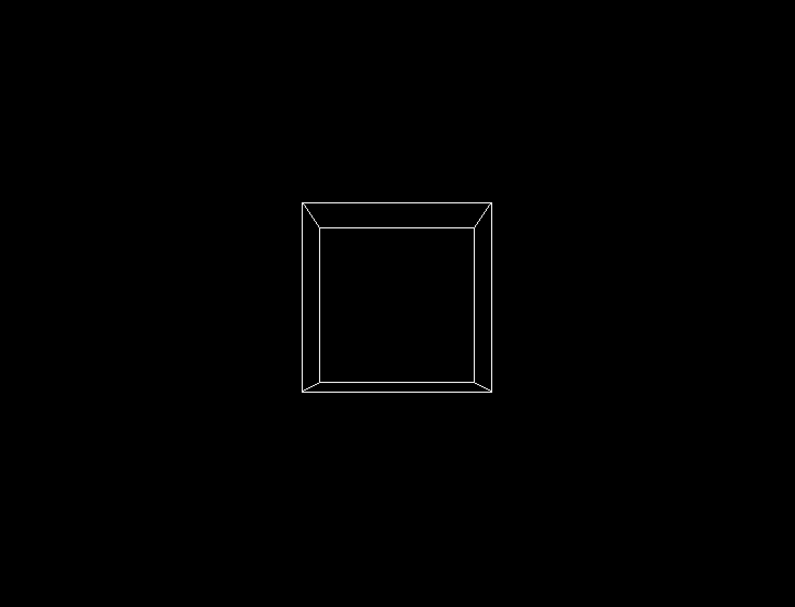
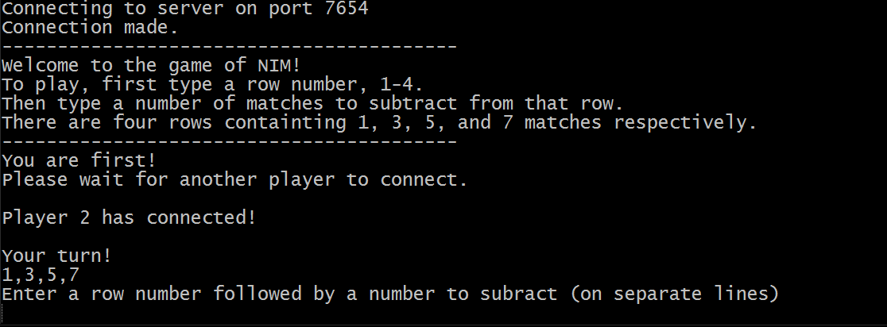

Nov, 2018
A JavaScript web-app that uses speech-to-text to help you take notes.
Technologies used: HTML, CSS, p5.SpeechRec.

May, 2017
A Java application that fetches the top spotify charts and displays tweets about songs. Retrieves the top 20 songs from spotify charts.
Technologies used: JavaFX, Twitter API, SpotifyCharts API.

January, 2017
Primitive 3D rendering using freeglut in C.
Technologies used: Eclipse Neon, OpenGL, freeglut

Fall, 2016
A console application based on the famous game from 1970. Read more about it here.
Technologies used: VMWare Player, Atom.
January, 2017
An interactive plot of the data receieved by the gamma sensor beneath Chapman University's Hashinger Science center.
Technologies used: Rstudio, dygraphs.
March, 2017
A server-based 2-player console game using TCP socket programming in Java. Read more about Nim here.
Technologies used: Git Bash, Wireshark.

Nov, 2017
An Android application that fetches the top 200 songs from spotify charts. and displays them in a rankable list.
Technologies used: Android Studio